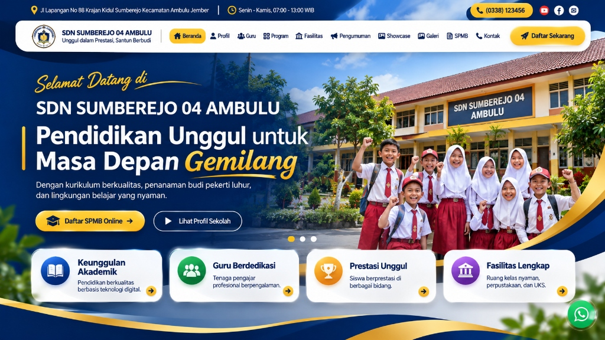

SDN SUMBEREJO 04 AMBULU
Pendidikan Unggul untuk
Masa Depan Gemilang
Dengan kurikulum berkualitas, penanaman budi pekerti luhur, dan lingkungan belajar yang nyaman.

Sinergi Sekolah dan Keluarga untuk Masa Depan Anak Bangsa
Assalamu’alaikum Warahmatullahi Wabarakatuh. Puji syukur kita panjatkan ke hadirat Tuhan Yang Maha Esa. Melalui portal resmi SDN Sumberejo 04 Ambulu ini, kami berkomitmen memberikan layanan pendidikan dasar yang berkualitas, transparan, dan adaptif terhadap perkembangan zaman. Mari bersama-sama mendampingi putra-putri kita tumbuh menjadi pribadi yang beriman, cerdas, santun, dan berdaya saing.
Pengumuman Terbaru
Informasi terkini seputar kegiatan akademik, agenda sekolah, dan pemberitahuan resmi bagi orang tua/wali murid
Profil, Visi & Misi Sekolah
Mengenal arah pendidikan, sejarah perjalanan, dan identitas resmi SDN Sumberejo 04 Ambulu
"Terwujudnya Peserta Didik yang Beriman, Cerdas, Terampil, Mandiri, dan Berwawasan Lingkungan."
Visi ini menjadi kompas utama dalam seluruh kegiatan pembelajaran di kelas maupun pembiasaan karakter di lingkungan sekolah.
- Menanamkan keimanan dan ketakwaan melalui pengamalan ajaran agama.
- Melaksanakan pembelajaran aktif, inovatif, kreatif, efektif, dan menyenangkan.
- Mengembangkan potensi akademik, seni, dan olahraga peserta didik secara optimal.
- Membiasakan perilaku santun, disiplin, jujur, dan peduli sesama.
- Mewujudkan lingkungan sekolah yang bersih, hijau, sehat, dan nyaman.
Sejarah Singkat
SD Negeri Sumberejo 04 berdiri sebagai wujud komitmen pemerintah dan masyarakat Desa Sumberejo untuk menyediakan layanan pendidikan dasar yang merata dan berkualitas. Sejak awal berdiri hingga kini, sekolah terus berbenah meningkatkan mutu sarana prasarana, kompetensi pendidik, serta prestasi siswa di berbagai ajang kecamatan maupun kabupaten.
| Nama Satuan | SDN SUMBEREJO 04 AMBULU |
|---|---|
| Status / Akreditasi | Negeri / Terakreditasi A |
| Kurikulum | Kurikulum Merdeka & Nasional |
| Waktu Belajar | Senin - Jumat, 07:00 - 13:00 WIB |
| Alamat | Jl. Lapangan No. 88 Krajan Kidul, Sumberejo, Kec. Ambulu, Jember |
Program Unggulan & Ekstrakurikuler
Keseimbangan pembelajaran akademik, pembiasaan karakter harian, serta wadah pengembangan bakat siswa
Gerakan Literasi Sekolah (GLS)
Membaca buku pengayaan selama 15 menit sebelum pelajaran dimulai untuk menumbuhkan minat baca, perbendaharaan kata, dan daya nalar kritis siswa.
Pembinaan Imtak & Adab Pagi
Pembiasaan senyum-sapa-salam, doa bersama, hafalan surat pendek, dan pembinaan akhlak mulia setiap pagi sebelum kegiatan belajar dimulai.
Jumat Bersih & Cinta Lingkungan
Kegiatan gotong royong merawat taman kelas, edukasi pemilahan sampah, dan senam sehat bersama guna membangun kesadaran ekologis.
Kegiatan Ekstrakurikuler Pilihan
Lihat Detail Program →Pramuka (Wajib)
Melatih kemandirian, kedisiplinan, kerjasama regu, kepedulian sosial, dan kepemimpinan peserta didik.
Seni Tari Tradisional
Mengenalkan kekayaan seni budaya Nusantara, melatih kepekaan gerak, wirama, dan kepercayaan diri di atas panggung.
Klub Olahraga & Bulu Tangkis
Mengasah kebugaran jasmani, ketangkasan, sportivitas, dan persiapan menghadapi ajang O2SN tingkat kecamatan.
Guru & Tenaga Kependidikan
Pendidik profesional dan berdedikasi tinggi yang siap membimbing tumbuh kembang akademik maupun karakter peserta didik
Galeri Kegiatan Sekolah
Momen kebersamaan, aktivitas pembelajaran, peringatan hari besar, dan prestasi siswa SDN Sumberejo 04 Ambulu
Fasilitas & Sarana Sekolah
Sarana dan prasarana yang bersih, terawat, dan memadai untuk menunjang kenyamanan kegiatan belajar mengajar
Ruang Kelas Representatif
Ruang belajar dengan sirkulasi udara dan pencahayaan alami yang sehat serta dilengkapi media pembelajaran interaktif.
Perpustakaan Ramah Anak
Koleksi buku bacaan literasi, ensiklopedia sains, buku cerita bergambar, dan sudut baca yang nyaman bagi siswa.
Lapangan Olahraga & Upacara
Area terbuka serbaguna untuk pelaksanaan upacara bendera, senam bersama, kegiatan pramuka, dan olahraga.
Informasi Resmi SPMB
Panduan jadwal, persyaratan dokumen, dan alur pendaftaran murid baru secara daring maupun luring
Periode Pendaftaran
Jadwal Pendaftaran Online & Offline:
Verifikasi berkas di sekolah dilayani setiap hari kerja pukul 08:00 - 12:00 WIB.
Biaya Pendaftaran
Biaya Formulir & Seleksi:
SDN Sumberejo 04 Ambulu tidak memungut biaya pendaftaran dalam bentuk apa pun.
Persyaratan Utama
- Usia prioritas 7 tahun (minimal 6 tahun pada 1 Juli tahun berjalan).
- Scan / Foto Kartu Keluarga (KK) asli.
- Scan / Foto Akta Kelahiran asli.
- Surat Keterangan Lulus / Ijazah TK (jika ada).
Siapkan Dokumen
Siapkan foto atau scan Kartu Keluarga (KK) dan Akta Kelahiran yang jelas (maksimal 2 MB).
Isi Formulir Online
Lengkapi biodata calon peserta didik dan orang tua/wali pada halaman Formulir SPMB.
Simpan Nomor Bukti
Unduh atau salin Nomor Pendaftaran resmi yang terbit otomatis setelah mengirim formulir.
Verifikasi & Pengumuman
Panitia memverifikasi berkas dan mengirimkan informasi hasil seleksi melalui portal & WhatsApp.
Kontak & Lokasi Sekolah
Kami siap melayani kunjungan informasi maupun konsultasi pendaftaran pada jam kerja layanan sekolah
Alamat Lengkap
Jl. Lapangan No. 88 Krajan Kidul, Desa Sumberejo, Kecamatan Ambulu, Kabupaten Jember, Jawa Timur
Jam Layanan Kantor
Senin - Jumat, 07:00 - 13:00 WIB
Sabtu, Minggu & Hari Libur Nasional: Tutup